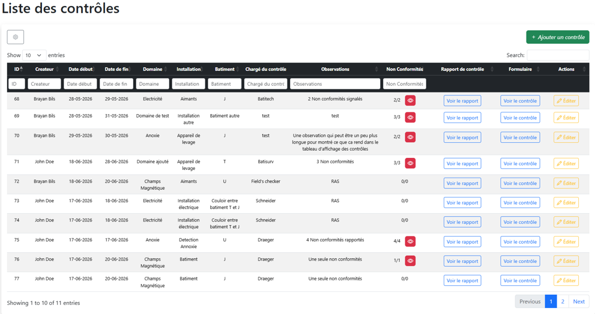
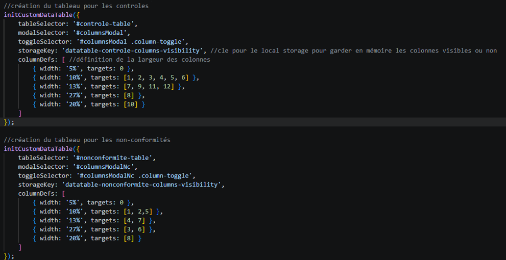
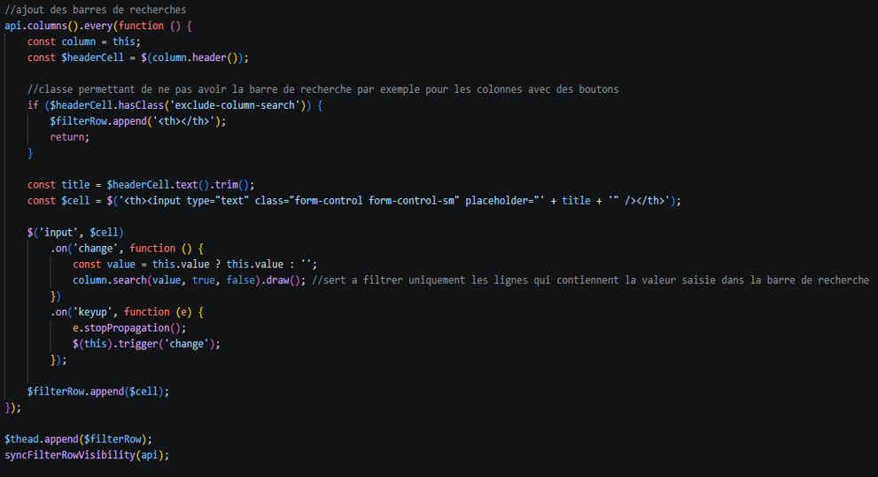

Stage LNCMI
Développeur Web · CNRS Grenoble · 14 semaines · 2026
La structure d'accueil
Le LNCMI (Laboratoire National des Champs Magnétiques Intenses) est un laboratoire de recherche du CNRS créé en 2009, implanté à Grenoble et Toulouse. Il met à disposition des chercheurs du monde entier des champs magnétiques parmi les plus intenses au monde, jusqu'à 42 Tesla en continu à Grenoble.
Mon stage s'est déroulé au sein du service Informatique, rattaché au pôle Soutien technique, aux côtés de M. Buisson Sébastien (maître de stage) et Mme Druart Marilyne (référente Symfony).
Contexte du projet
Les agents de prévention du laboratoire utilisaient une application PHP non structurée pour gérer les contrôles réglementaires du site. Elle ne gérait ni le suivi des non-conformités, ni la validation des documents, et reposait sur un processus entièrement papier : impression du rapport, signature physique par la direction, scan, puis réintégration en base de données.
La mission consistait à reprendre cette application de zéro avec Symfony, en dématérialisant entièrement le processus de validation et de signature.
Conception & recueil de besoins
Avant tout développement, un rendez-vous a été organisé avec les agents de prévention pour comprendre leurs usages. Ce recueil a débouché sur un cahier des charges formalisé le 1er avril 2026.
- Maquettes réalisées sur Figma et validées par les AP avant développement.
- Modélisation de la base de données et des user stories sur Miro.
- Kanban mis en place sur Jira pour le suivi des tâches.
- Deux profils définis : Agent de prévention (CRUD complet) et Direction (lecture + signature).
Le tableau des contrôles
L'interface principale de l'application affiche la liste des contrôles réglementaires sous forme de tableau enrichi avec DataTables. Chaque ligne indique le créateur, les dates, le domaine, l'installation, le bâtiment, l'organisme chargé du contrôle, les observations, et un compteur de non-conformités coloré en rouge si des non-conformités sont encore en cours. Les boutons en fin de ligne s'adaptent selon l'état du contrôle (signé ou non).

Implémentation des tableaux DataTables
Pour éviter toute duplication de code, j'ai centralisé la logique d'initialisation des tableaux dans une fonction initCustomDataTable() réutilisable. Elle prend en paramètre le sélecteur du tableau, le modal de gestion des colonnes, la clé de localStorage pour mémoriser la visibilité des colonnes, ainsi que les définitions de largeur. Cette fonction est appelée une fois pour le tableau des contrôles, et une fois pour le tableau des non-conformités.
Initialisation des deux tableaux

Ajout des barres de recherche par colonne

Génération PDF & signature
- Génération automatique des formulaires PDF avec HTML2PDF, nommés selon la convention définie avec les AP (Année – Domaine).
- Signature électronique intégrée : l'image de signature est injectée dans le template Twig, HTML2PDF régénère le PDF complet qui remplace l'ancien en base.
- Blocage de la modification après signature : le bouton "Éditer" est remplacé par "Voir" une fois le document signé.
Bilan personnel
Ce stage m'a permis de monter en compétences sur Symfony en conditions réelles, de gérer un projet de A à Z en autonomie — du recueil de besoins jusqu'à la mise en production — et de découvrir des librairies comme DataTables et HTML2PDF. Ce qui m'a le plus marqué, c'est la satisfaction de voir l'outil directement utilisé, avec un impact concret : la suppression d'une procédure papier inutile et un suivi des non-conformités enfin fiable.